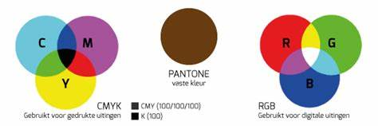

Kleurmodellen, bits en bytes spelen een grote rol in de manier waarop digitale apparaten kleuren vastleggen en weergeven. In de digitale wereld worden kleuren gepresenteerd door middel van getallen, waarbij elk getal een een kleur vertegenwoordigt. Op deze pagina gaan we dieper in op de kleurmodellen, bits en bytes, en hoe ze samenwerken met het ASCII-tabel.
Kleurmodellen stellen vast hoe kleur worden weergegeven in digitale systemen.Er zijn verschillende kleurmodellen, maar de meest gebruikte zijn RGB (rood, groen, blauw), CMYK (cyaan magenta, geel, zwart) en HSL/HSV (hue, saturation, lightness/value).
RGB-kleurmodel
In het RGB-kleurmodel worden kleuren gemaakt door verschillende hoeveelheden rood,
groen en blauw met elkaar te mengen. Elk kleur wordt weergegeven als een getal tussen 0 en 225, waarbij 0 geen kleur
vertegenwoordigt en 255 de maximale verzadiging van die kleur aangeeft.
CMYK-kleurmodel:
CMKYK wordt voornamelijk gebruikt in de drukindustrie. Hierbij worden kleuren gecreëerd door cyaan, magenta, geel
en zwart met elkaar te combineren. Elk van deze kleuren wordt weergegeven met waarden tussen de 0 en 100%.
Voor verdere uitleg over kleurmodellen, klik op de foto hieronder
Pixels
Pixels zijn de kleinste afzonderlijke punten waaruit een digitaal beeld is opgebouwd.
Ze vormen de bouwstenen van digitale afbeeldingen en schermen. Een pixel kan een enkele kleur vertegenwoordigen en
wordt vaak als vierkant weergegeven.
Hoe meer pixels een scherm heeft, hoe gedetailleerder en scherper de afbeeldingen kunnen zijn.
Resolutie:
Resolutie verwijst naar het aantal pixels in de breedte en hoogte van een scherm of een digitaal beeld.
Het wordt vaak uitgedrukt als de breedte x hoogte in pixels. Bijvoorbeeld, een scherm met een resolutie van 1920x1080
heeft 1920 pixels in de breedte en 1080 pixels in de hoogte.
Een hogere resolutie betekent over het algemeen een scherper beeld met meer details.
Resolutie is een belangrijke overweging bij het kiezen van beeldschermen, camera's en het maken van
digitale afbeeldingen.